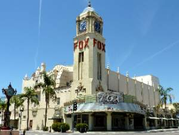
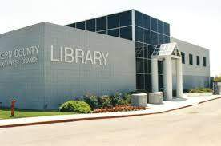

City of Bakersfield
Chamber of Commerce
Discover Bakersfield!

This picture can give you a glimpse into downtown Bakersfield.
You can find restaurants, parks, a performing arts center, an ice
rink, and a city pool in the downtown area.
The Fox Theater has been open since 1930 and is a local performing arts center.
You can find a variety of kinds of shows there anywhere from ballets to movies.
This is one of the several local libraries. You can come here to check out
books, enjoy story time, or simple enjoy the quiet.
Oil is a large industry in Bakersfield. Kern County (where Bakersfield
is located) produces approximately 66% of the oil in California and
10% of the oil supply in the United States. The math works out to
roughly 560,000 barrels of oil being produced per day.

This is the iconic Bakersfield sign. It is located near the entrance to
the freeway and can be seen from Route 99.